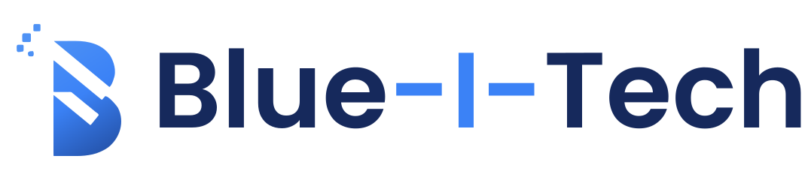
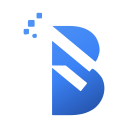
Technology. Built for business.
Tagline set in Poppins Medium (outlined), in Slate, sized to span the wordmark width.

Wordmark set in Poppins SemiBold, converted to outlined vector paths (no live font), with the central “-I-” in Brand Blue. SIL Open Font License — free for commercial use.
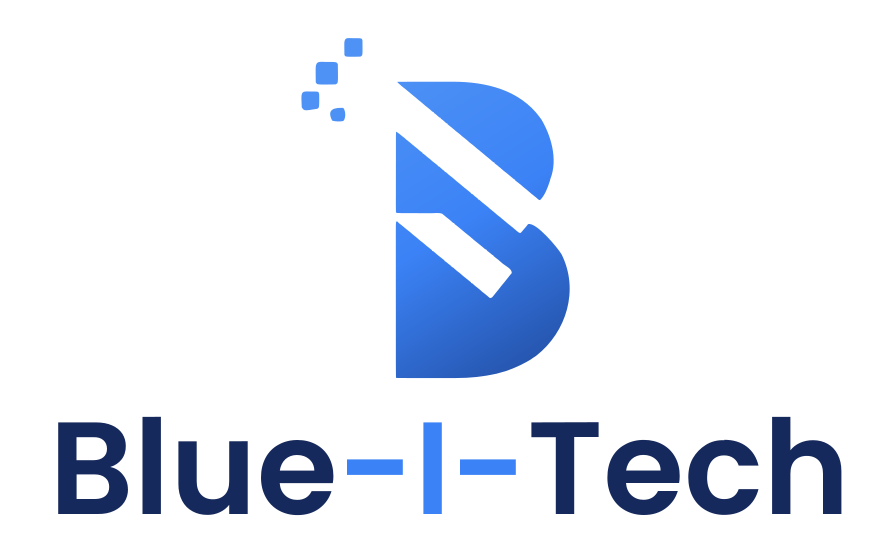
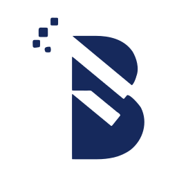
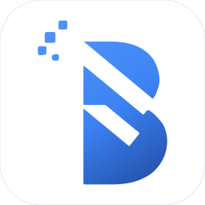
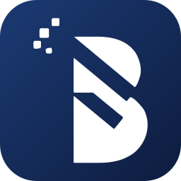
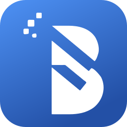
The favicon reverses the full mark (white) onto a blue tile so it stays legible down to 16px. This tab’s favicon already uses it.
Keep clear space around the mark equal to the height of one pixel-dissolve square (the largest). Minimum sizes: mark ≥ 24px, icon tile ≥ 32px, favicon ≥ 16px. Don’t place the gradient mark on busy imagery — use the reversed white version.
No skewing/rotating · no off-brand fills behind the gradient mark · no gradient mark on low-contrast photos (use reversed) · no re-colouring outside the palette.
Import palette.css for CSS custom properties, or palette.json for a design-tool / build pipeline.
<link rel="stylesheet" href="palette.css">
.btn-primary { background: var(--color-primary); color: var(--color-on-primary); }
.hero { background: var(--bit-gradient-hero); }
a { color: var(--color-primary-ink); } /* AA text on white */
<!-- favicon / app icon -->
<link rel="icon" type="image/svg+xml" href="favicon.svg">
<link rel="apple-touch-icon" href="png/icon-light-180.png">